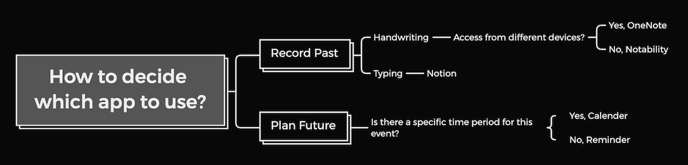

How I Utilize Apps to Improve my Work and Life Efficiency?
Motivation
As an international student in NYU, English is not my primary
language, there is an obvious hit to my efficiency when I process
with English, especially in two aspects: Firstly, to organize my
words and accurately express my idea. Secondly, understand the
abstruse words and sentence.
On the other side, undergraduate life requires much more than study,
including various school activities, interviews, and other
socializing events, which requires us to have a plan for life.
Therefore, I start to use efficiency apps to improve efficiency and
plan ahead my life.
Divide my Demands
Plan Future
The prominent demand I have is to list to remind about all of my
DDLs, which could help me plan to finish all my homework and better
to use the free time.
A similar one is a remind about all kind of events that I plan to
attend, I separate these two demands because, these are different in
nature. Tasks need to be done before, the DDL, which means it takes
your time before the DDL comes, but events used to happen in a
specific time period.
Record Past
For me, the most valuable part of undergraduate life is the lecture,
(considering the expensive tuition :) . Thus, in this record Past
session my primary demand is to record what I learn in class.
Beside lectures, as undergraduate, there is other stuff worth
records and tracking, such as projects, self-introspection, and
extracurricular skills, including other online lectures, personal
hobbies, and so on.

How my Apps Satisfy these Demands?
Apple Reminder and Calendar:
These two apps are what I used to plan future. Calendar is used to
record all kinds of event that I plan to take, because for events,
it takes in a specific period, and calendar has the view that shows,
among all 24 hours of a day, which period is taken by which event.
In this view, I can clearly see whether there is time conflicts
between events with out referring back to the time period for these
two events separately. Reminder is used to track all kinds of tasks,
including homework that has a specific DDL and also wish list,
because of its property as a tasks to finish.
OneNote and Notability:
OneNote and Notability are two apps that I used to do hand writing
for homework and notes taking. My major is computer science and data
science, which require me to take several math course, and the
reason I mention math class is that hand writing is much more useful
to understand and practice the course content. Thus, I would use
OneNote to take the class note and Notability to do the Homework.
This situation also apply to other course that when I feel more
flexible and memorable to use handing writing.
Notion:
As the counterpart of taking note by hand writing, Notion is the
apps that I taking note by typing. Originally, my typing app is also
OneNote, due to its convenience in synchronization. However, the
text box in OneNote are all free in position which is hard to
maintain a clear layout. Thus, after consideration, I turn to Notion
which support the MD grammar and provide a much more clear way of
presentation.